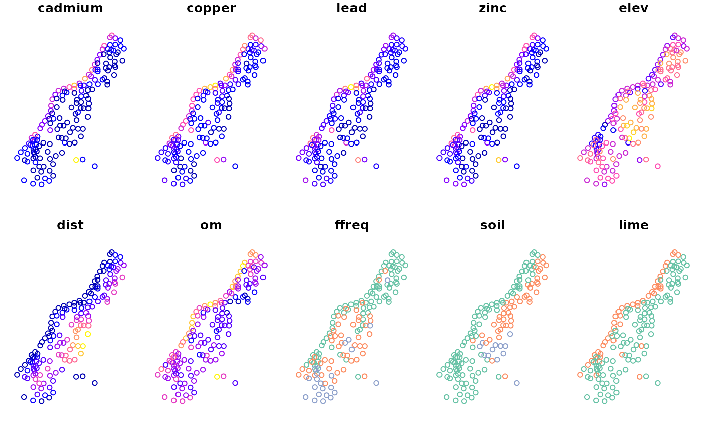

This vignetted describes how simple features can be read in R from files or databases, and how they can be converted to other formats (text, sp)
The Geospatial Data Abstraction Library (GDAL) is the swiss army knife for spatial data: it reads and writes vector and raster data from and to practically every file format, or database, of significance. Package sf reads and writes using GDAL by the functions st_read and st_write.
The data model GDAL uses needs
This may sound complex, but it is needed to map to over 200 data formats! Package sf tries hard to simplify this where possible (e.g. a file contains a single layer), but this vignette will try to point you to the options.
As an example, we read the North Carolina counties SIDS dataset, which comes shipped with the sf package by:
library(sf) ## Linking to GEOS 3.5.0, GDAL 2.2.2, PROJ 4.8.0 fname <- system.file("shape/nc.shp", package="sf") fname ## [1] "/tmp/RtmpCdQsky/temp_libpath64f92385e079/sf/shape/nc.shp" nc <- st_read(fname) ## Reading layer `nc' from data source `/tmp/RtmpCdQsky/temp_libpath64f92385e079/sf/shape/nc.shp' using driver `ESRI Shapefile' ## Simple feature collection with 100 features and 14 fields ## geometry type: MULTIPOLYGON ## dimension: XY ## bbox: xmin: -84.32385 ymin: 33.88199 xmax: -75.45698 ymax: 36.58965 ## CRS: 4267
Typical users will use a file name with path for fname, or first set R’s working directory with setwd() and use file name without path.
We see here that a single argument is used to find both the datasource and the layer. This works when the datasource contains a single layer. In case the number of layers is zero (e.g. a database with no tables), an error message is given. In case there are more layers than one, the first layer is returned, but a message and a warning are given:
> st_read("PG:dbname=postgis")
Multiple layers are present in data source PG:dbname=postgis, reading layer `meuse'.
Use `st_layers' to list all layer names and their type in a data source.
Set the `layer' argument in `st_read' to read a particular layer.
Reading layer `meuse' from data source `PG:dbname=postgis' using driver `PostgreSQL'
Simple feature collection with 155 features and 12 fields
geometry type: POINT
dimension: XY
bbox: xmin: 178605 ymin: 329714 xmax: 181390 ymax: 333611
epsg (SRID): 28992
proj4string: +proj=sterea +lat_0=52.15616055555555 ...
Warning message:
In eval(substitute(expr), envir, enclos) :
automatically selected the first layer in a data source containing more than one.The message points to the st_layers command, which lists the driver and layers in a datasource, e.g.
> st_layers("PG:dbname=postgis")
Driver: PostgreSQL
Available layers:
layer_name geometry_type features fields
1 meuse Point 155 12
2 meuse_sf Point 155 12
3 sids Multi Polygon 100 14
4 meuse_tbl Point 155 13
5 meuse_tbl2 Point 155 13
> A particular layer can now be read by e.g.
st_read("PG:dbname=postgis", "sids")
st_layers has the option to count the number of features in case these are missing: some datasources (e.g. OSM xml files) do not report the number of features, but need to be completely read for this. GDAL allows for more than one geometry column for a feature layer; these are reported by st_layers.
In case a layer contains only geometries but no attributes (fields), st_read still returns an sf object, with a geometry column only.
We see that GDAL automatically detects the driver (file format) of the datasource, by trying them all in turn.
st_read follows the conventions of base R, similar to how it reads tabular data into data.frames. This means that character data are read, by default as factors. For those who insist on retrieving character data as character vectors, the argument stringsAsFactors can be set to FALSE:
st_read(fname, stringsAsFactors = FALSE)
Alternatively, a user can set the global option stringsAsFactors, and this will have the same effect:
options(stringsAsFactors = FALSE) st_read(fname) ## Reading layer `nc' from data source `/tmp/RtmpCdQsky/temp_libpath64f92385e079/sf/shape/nc.shp' using driver `ESRI Shapefile' ## Simple feature collection with 100 features and 14 fields ## geometry type: MULTIPOLYGON ## dimension: XY ## bbox: xmin: -84.32385 ymin: 33.88199 xmax: -75.45698 ymax: 36.58965 ## CRS: 4267
To write a simple features object to a file, we need at least two arguments, the object and a filename:
st_write(nc, "nc1.shp")
The file name is taken as the data source name. The default for the layer name is the basename (filename without path) of the the data source name. For this, st_write needs to guess the driver. The above command is, for instance, equivalent to:
st_write(nc, dsn = "nc1.shp", layer = "nc.shp", driver = "ESRI Shapefile") ## Writing layer `nc' to data source `nc1.shp' using driver `ESRI Shapefile' ## Writing 100 features with 14 fields and geometry type Multi Polygon.
How the guessing of drivers works is explained in the next section.
The output driver is guessed from the datasource name, either from its extension (.shp: ESRI Shapefile), or its prefix (PG:: PostgreSQL). The list of extensions with corresponding driver (short driver name) is:
| extension | driver short name |
|---|---|
bna |
BNA |
csv |
CSV |
e00 |
AVCE00 |
gdb |
FileGDB |
geojson |
GeoJSON |
gml |
GML |
gmt |
GMT |
gpkg |
GPKG |
gps |
GPSBabel |
gtm |
GPSTrackMaker |
gxt |
Geoconcept |
jml |
JML |
map |
WAsP |
mdb |
Geomedia |
nc |
netCDF |
ods |
ODS |
osm |
OSM |
pbf |
OSM |
shp |
ESRI Shapefile |
sqlite |
SQLite |
vdv |
VDV |
xls |
xls |
xlsx |
XLSX |
The list with prefixes is:
| prefix | driver short name |
|---|---|
couchdb: |
CouchDB |
DB2ODBC: |
DB2ODBC |
DODS: |
DODS |
GFT: |
GFT |
MSSQL: |
MSSQLSpatial |
MySQL: |
MySQL |
OCI: |
OCI |
ODBC: |
ODBC |
PG: |
PostgreSQL |
SDE: |
SDE |
Various GDAL drivers have options that influences the reading or writing process, for example what the driver should do when a table already exists in a database: append records to the table or overwrite it:
In case the table exists and the option is not specified, the driver will give an error. Driver-specific options are documented in the driver manual of gdal. Multiple options can be given by multiple strings in options.
For st_read, there is only options; for st_write, one needs to distinguish between dataset_options and layer_options, the first related to opening a dataset, the second to creating layers in the dataset.
Package sf supports reading and writing from and to spatial databases using the DBI interface. So far, testing has mainly be done with PostGIS, other databases might work but may also need more work. An example of reading is:
library(RPostgreSQL) conn = dbConnect(PostgreSQL(), dbname = "postgis") meuse = st_read(conn, "meuse") meuse_1_3 = st_read(conn, query = "select * from meuse limit 3;") dbDisconnect(conn)
We see here that in the second example a query is given. This query may contain spatial predicates, which could be a way to work through massive spatial datasets in R without having to read them completely in memory.
Similarly, tables can be written:
conn = dbConnect(PostgreSQL(), dbname = "postgis") st_write(conn, meuse, drop = TRUE) dbDisconnect(conn)
Here, the default table (layer) name is taken from the object name (meuse). Argument drop informs to drop (remove) the table before writing; logical argument binary determines whether to use well-known binary or well-known text when writing the geometry (where well-known binary is faster and lossless).
The usual form in which we see simple features printed is well-known text:
st_point(c(0,1)) ## POINT (0 1) st_linestring(matrix(0:9,ncol=2,byrow=TRUE)) ## LINESTRING (0 1, 2 3, 4 5, 6 7, 8 9)
We can create these well-known text strings explicitly using st_as_text:
x = st_linestring(matrix(0:9,ncol=2,byrow=TRUE)) str = st_as_text(x) x ## LINESTRING (0 1, 2 3, 4 5, 6 7, 8 9)
We can convert back from WKT by using st_as_sfc:
st_as_sfc(str) ## Geometry set for 1 feature ## geometry type: LINESTRING ## dimension: XY ## bbox: xmin: 0 ymin: 1 xmax: 8 ymax: 9 ## CRS: NA ## LINESTRING (0 1, 2 3, 4 5, 6 7, 8 9)
Well-known binary is created from simple features by st_as_binary:
x = st_linestring(matrix(0:9,ncol=2,byrow=TRUE)) (x = st_as_binary(x)) ## [1] 01 02 00 00 00 05 00 00 00 00 00 00 00 00 00 00 00 00 00 00 00 00 00 f0 3f ## [26] 00 00 00 00 00 00 00 40 00 00 00 00 00 00 08 40 00 00 00 00 00 00 10 40 00 ## [51] 00 00 00 00 00 14 40 00 00 00 00 00 00 18 40 00 00 00 00 00 00 1c 40 00 00 ## [76] 00 00 00 00 20 40 00 00 00 00 00 00 22 40 class(x) ## [1] "raw"
The object returned by st_as_binary is of class WKB and is either a list with raw vectors, or a single raw vector. These can be converted into a hexadecimal character vector using rawToHex:
rawToHex(x) ## [1] "0102000000050000000000000000000000000000000000f03f000000000000004000000000000008400000000000001040000000000000144000000000000018400000000000001c4000000000000020400000000000002240"
Converting back to sf uses st_as_sfc:
x = st_as_binary(st_sfc(st_point(0:1), st_point(5:6))) st_as_sfc(x) ## Geometry set for 2 features ## geometry type: POINT ## dimension: XY ## bbox: xmin: 0 ymin: 1 xmax: 5 ymax: 6 ## CRS: NA ## POINT (0 1) ## POINT (5 6)
Spatial objects as maintained by package sp can be converted into simple feature objects or geometries by st_as_sf and st_as_sfc, respectively:
methods(st_as_sf) ## [1] st_as_sf.data.frame* st_as_sf.lpp* st_as_sf.map* ## [4] st_as_sf.owin* st_as_sf.ppp* st_as_sf.psp* ## [7] st_as_sf.sf* st_as_sf.sfc* st_as_sf.Spatial* ## see '?methods' for accessing help and source code methods(st_as_sfc) ## [1] st_as_sfc.bbox* st_as_sfc.blob* ## [3] st_as_sfc.character* st_as_sfc.dimensions* ## [5] st_as_sfc.factor* st_as_sfc.list* ## [7] st_as_sfc.map* st_as_sfc.owin* ## [9] st_as_sfc.pq_geometry* st_as_sfc.psp* ## [11] st_as_sfc.raw* st_as_sfc.SpatialLines* ## [13] st_as_sfc.SpatialMultiPoints* st_as_sfc.SpatialPixels* ## [15] st_as_sfc.SpatialPoints* st_as_sfc.SpatialPolygons* ## [17] st_as_sfc.tess* st_as_sfc.WKB* ## see '?methods' for accessing help and source code
An example would be:
library(sp) data(meuse) coordinates(meuse) = ~x+y m.sf = st_as_sf(meuse) opar = par(mar=rep(0,4)) plot(m.sf) ## Warning: plotting the first 10 out of 12 attributes; use max.plot = 12 to plot ## all

Conversion of simple feature objects of class sf or sfc into corresponding Spatial* objects is done using the as method, coercing to Spatial: